Slik forbereder og leder du Vakttårn-studiet og blir ferdig i tide
Versjon 4.0 · november 2026
⚠ To viktige advarsler
Led alltid fra den originale publikasjonen. Appen viser avsnittene og spørsmålene bare for å beregne tidene. Den som leder, må aldri stole på innholdet som vises i timeren: Bruk alltid appen JW Library eller det trykte bladet Vakttårnet når du presenterer stoffet.
Bruk presentasjonsmodus under studiet. Det er den anbefalte måten å bruke timeren på når du leder, fordi den hindrer distraksjoner: Den viser bare det du trenger, med grønt, gult og rødt slik at du med ett blikk ser hvordan det går med tiden, og store knapper som er lette å trykke på, for å gå til neste avsnitt og registrere kommentarer (punkt 9).
Studietimer hjelper den broren som leder Vakttårn-studiet, til å fordele tiden godt og bli ferdig i tide.
Du laster inn ukens artikkel som PDF, og appen
leser artikkelen og finner avsnittene, spørsmålene, skriftstedene som skal leses, bildene, fotnotene og repetisjonsspørsmålene.
beregner hvor mye tid hver del skal få: innledningen, hvert avsnitt, repetisjonen og avslutningen.
veileder deg under studiet med en timer for hvert avsnitt og farger som viser om du er i rute, i ekstratid eller over tiden.
justerer seg selv: Hvis et avsnitt tar lang tid, fordeler den den tiden som er igjen, på de neste avsnittene, slik at du blir ferdig i tide.
Uoffisiell app. Det er et gratis, uavhengig prosjekt. Det er ikke en offisiell publikasjon og har ingen tilknytning til jw.org eller til Jehovas vitners organisasjon. Artikkelen analyseres på din egen enhet: Den blir ikke sendt til eller lagret på noen server.
Bildene i denne veiledningen bruker en oppdiktet eksempelartikkel, ikke en virkelig artikkel fra Vakttårnet.
2Installere appen
Ikonet til appen er en oransje bok med en farget skala (grønn, gul og rød) på svart bakgrunn.
Ikonet
Android-telefon eller -nettbrett
Åpne Google Play.
Åpne denne lenken: åpne i Google Play (eller søk etter appen i Google Play).
Trykk på Installer.
Hvis du allerede bruker appen i nettleseren på en Android-enhet, viser startskjermen det grønne kortet «Bruker du Android?» med knappen «Åpne i Google Play».
iPhone og iPad
Den er ikke i App Store ennå, men den fungerer like bra fra nettet:
Trykk på Del-knappen (firkanten med en pil som peker opp).
Velg «Legg til på Hjem-skjerm» og trykk på Legg til. Ikonet vises på skjermen din.
Datamaskin
Åpne temporizador-estudio.vercel.app i Chrome eller Edge. Hvis du vil, kan du installere den som et program med installeringsikonet i adressefeltet.
Oppdateringer: Når det kommer en ny versjon, vises meldingen «En ny versjon av appen er tilgjengelig.» Trykk på Oppdater. Appen oppdaterer seg aldri av seg selv midt i et studium.
3Startskjermen
Dette er det første du ser når du åpner appen. De røde tallene på bildet viser hvor hver ting er.
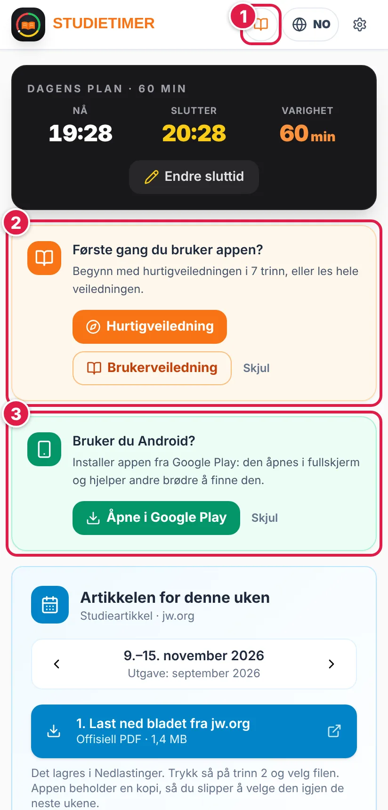
Startskjermen.
Bok-knappen: åpner denne veiledningen når som helst.
«Første gang du bruker appen?»: åpner hurtigveiledningen eller denne veiledningen. Når du kjenner appen, trykker du på Skjul.
«Bruker du Android?» (bare på Android-telefoner som bruker nettleseren): installer appen fra Google Play. Dette kortet kan også skjules.
Lenger ned finner du
Dagens plan: klokkeslettet nå, når studiet slutter, og varigheten.
Artikkelen for denne uken: for å laste ned bladet og åpne det (punkt 4).
Kretstilsynsmannens besøk: bryteren for studiet på 30 minutter (punkt 13).
Innstillinger for studiet: en oversikt over innstillingene dine, med lenken Endre.
Nederst: lenker til personvern, veiledningen, Google Play og studiehistorikken.
Øverst finner du også språket (NO) og innstillingene⚙.
4Laste inn ukens artikkel
Kortet «Artikkelen for denne uken» viser den aktuelle uken (for eksempel 9.–15. november 2026) og hvilken utgave av Vakttårnet den står i. Med pilene ‹› kan du velge en annen uke.
«1. Last ned bladet fra jw.org» åpner den offisielle PDF-en av riktig utgave. På Android lagres den i Nedlastinger; på iPhone trykker du på Del → «Arkiver i Filer».
«2. Velg PDF-en du lastet ned»: Velg den filen. Appen leter i bladet etter artikkelen for den valgte uken og analyserer den. Etter at du har trykt på trinn 1, blir denne knappen grønn når du kommer tilbake til appen («Lastet ned? Trykk her for å åpne den»): Ett trykk er nok.
Vakttårnet lastes ned på det språket appen er på. Hvis appen er på norsk, lastes den norske utgaven ned; hvis den er på svensk, den svenske, og slik er det med alle språkene. Vil du laste ned et annet språk, må du først endre språket i appen (punkt 14).
Appen beholder en kopi av bladet. De neste ukene i samme utgave åpnes direkte med «Åpne artikkelen for denne uken», uten at du trenger å laste ned noe igjen. Lagrede blader slettes automatisk 3 måneder etter den siste uken sin.
På en datamaskin kan du også dra PDF-en hvor som helst på startskjermen (meldingen «Slipp PDF-en av Vakttårnet her» vises) eller velge mappen der du har bladene, så finner appen dem selv.
Står det at bladet ikke er publisert ennå? jw.org publiserer hver utgave noen uker i forveien. Hvis du velger en uke langt fram i tiden, er den kanskje ikke tilgjengelig ennå.
5Oversikten og studieplanen
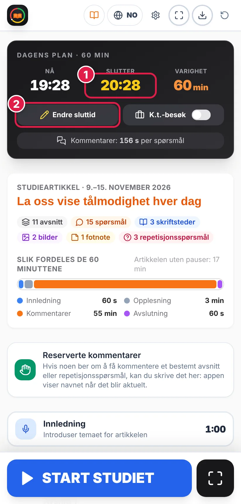
Dagens plan.
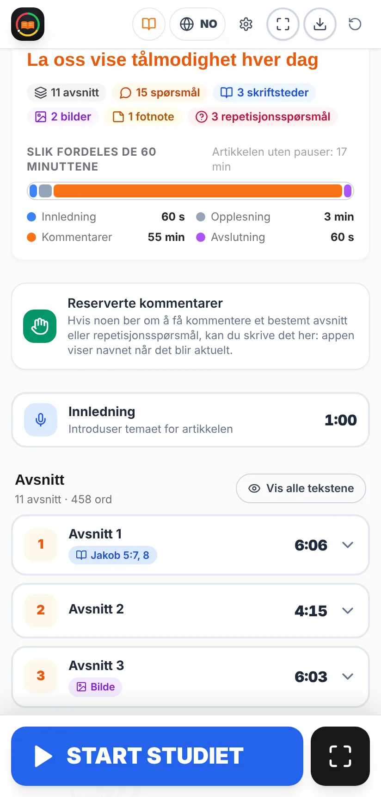
Oversikten over artikkelen.
Sluttid: når studiet slutter.
«Endre sluttid»: Bruk denne når det offentlige foredraget drar ut (se ruten nedenfor).
Når bør jeg endre sluttiden? Møtet varer i 1 time og 45 minutter: sang og bønn (5 min), offentlig foredrag (30 min), sang (5 min), Vakttårn-studiet (60 min) og avsluttende sang og bønn (5 min).
Hvis foredraget drar ut, går de minuttene fra Vakttårn-studiet. Før du begynner studiet, trykker du på «Endre sluttid» og skriver inn når studiet må slutte for at møtet skal slutte i tide (5 minutter før slutt, til sang og bønn). Alt beregnes på nytt for å bli ferdig til den tiden.
Hvis foredraget slutter i tide eller tidlig, endrer du ingenting: Studiet varer sine 60 minutter, og møtet kan slutte litt tidlig, men aldri for sent. Derfor gjør appen aldri studiet lenger enn innstilt.
Enda bedre: Angi når det offentlige møtet begynner. Under Innstillinger → Tid skriver du én gang inn når møtet begynner (for eksempel 10.00). Appen regner selv ut når studiet må slutte: 10.40–11.40, eller 10.40–11.10 under kretstilsynsmannens besøk. Hvis foredraget drar ut, blir studiet kortere av seg selv, og du trenger ikke å trykke på «Endre sluttid». Hvis du ikke angir det, går ingenting galt: Studiet varer den innstilte tiden (60 minutter) fra du trykker på «Start studiet», og du kan fortsatt bruke «Endre sluttid».
Nedenfor viser oversikten over artikkelen
tittelen og uken.
hvor mange avsnitt, spørsmål, skriftsteder, bilder og fotnoter den har.
en farget linje som viser hvordan tiden fordeles: InnledningOpplesningKommentarerAvslutning.
Planen viser også «Kommentarer: X s per spørsmål»: gjennomsnittlig tid til å svare på hvert spørsmål.
Hvis artikkelen ikke får plass innenfor den valgte tiden, ser du en advarsel. Du kan gjøre studiet lengre eller velge en raskere lesehastighet i Innstillinger.
6Listen over avsnitt
Hvert avsnitt vises på én linje med nummeret og den planlagte tiden. Trykk på et avsnitt for å åpne det.
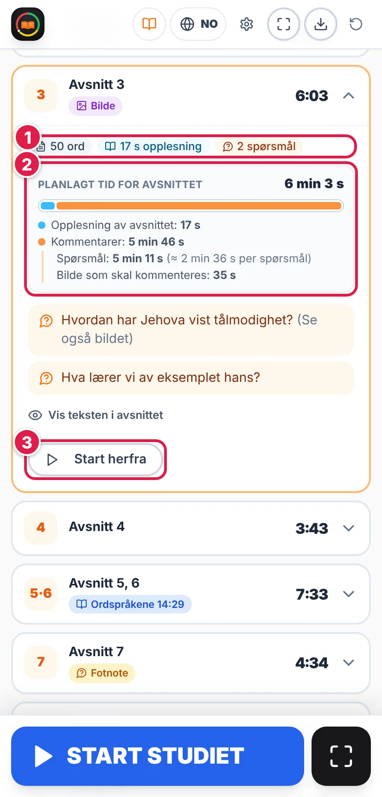
Et åpent avsnitt.
Detaljer om avsnittet, hver i sin farge: ord (grå), opplesningstid (blå) og spørsmål (oransje). Under studiet vises også det planlagte klokkeslettet (lilla).
Planlagt tid for avsnittet: totalen og hvordan den fordeles. Linjen viser opplesningen av avsnittet (blå), kommentarene (oransje) og, for lange avsnitt, ekstra tid til flere kommentarer (grønn). Hvis det er et skriftsted som skal leses, et bilde eller en fotnote, kommenterer tilhørerne det: Det vises under kommentarene, under spørsmålene (for eksempel «Skriftsted som skal leses: 35 s»). Delene blir til sammen totalen.
«Start herfra»: Hvis studiet allerede har begynt (for eksempel hvis du kommer sent), hopper du til dette avsnittet. Det fungerer også under studiet: Hvis dere har gått videre til et annet avsnitt og du glemte å trykke på «Neste», åpner du avsnittet dere er på, og trykker på «Start herfra». Klokken nullstilles ikke: Start- og sluttiden forblir de samme, appen fortsetter å telle den virkelige tiden og fordeler det som er igjen, på de avsnittene som gjenstår.
De fargede merkene forteller hva du må huske på:
Merke
Hva det betyr
Jakob 5:7, 8
Det er et skriftsted som skal leses.
Bilde
Spørsmålet viser til et bilde i artikkelen.
Fotnote
Det er en fotnote som skal kommenteres.
★ Hovedpunkt
Spørsmålet nevner en ramme eller en tanke i anførselstegn.
Med «Vis teksten i avsnittet» kan du lese teksten når du forbereder tidene. Når du leder, bruker du alltid den originale publikasjonen.
Avsnitt som har felles spørsmål (for eksempel «5, 6»), hører sammen, og Neste-knappen hopper over hele gruppen.
Reserverte kommentarer
Noen ganger ber noen før dere begynner, om å få kommentere et bestemt avsnitt eller repetisjonsspørsmål. Skriv det inn på kortet «Reserverte kommentarer», som vises når artikkelen er lastet inn:
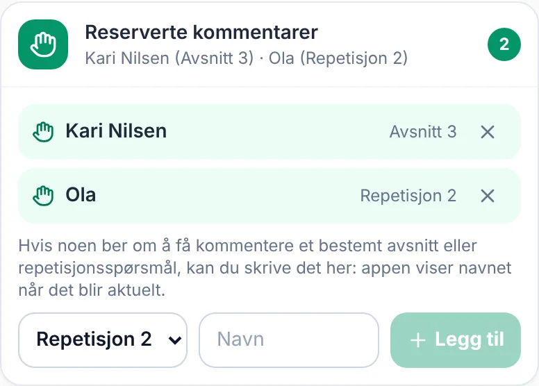
To reserverte kommentarer.
Velg avsnittet eller repetisjonsspørsmålet.
Skriv inn navnet og trykk på Legg til.
Trykk på ✕ for å fjerne det.
Når det avsnittet eller spørsmålet kommer, ser du navnet på kortet som er i gang, og i presentasjonsmodus i en godt synlig hvit boks (punkt 9). Navnene lagres bare på enheten din, sammen med den artikkelen.
7Lede studiet trinn for trinn
Anbefalt: Bruk presentasjonsmodus under studiet (punkt 9). Her ser du hvordan det fungerer; det er likt i begge visningene.
På telefonen er hovedknappene alltid nederst:
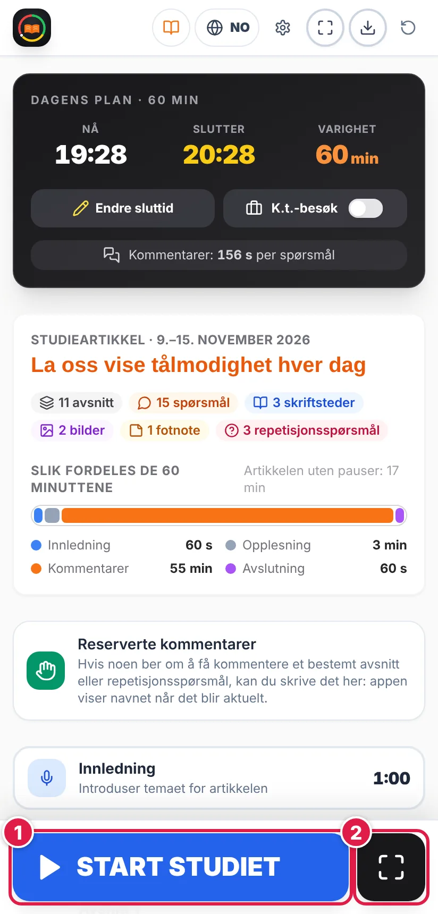
Før dere begynner.
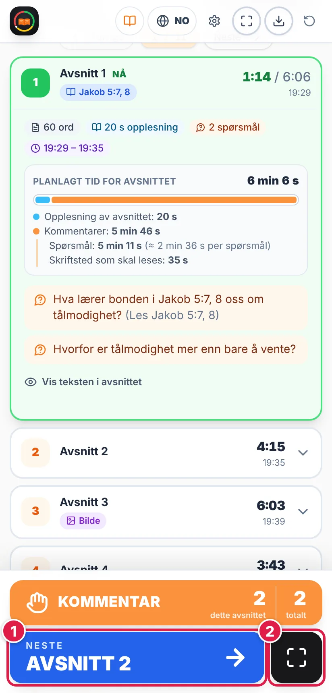
Under et avsnitt.
Stor blå knapp: Den viser hva som kommer etterpå. Trykk på den hver gang dere går over til en ny del: Start studiet → Avsnitt 1 → Avsnitt 2 → … → Repetisjon → Avslutning → Avslutt studiet.
Svart knapp⛶: åpner presentasjonsmodus.
Under avsnittene vises også den oransje knappen ✋ KOMMENTAR: Trykk på den hver gang noen kommenterer. Til slutt ser du hvor mange kommentarer det ble.
Innledning. Trykk på «Start studiet». Hovedstoppeklokken og stoppeklokken for innledningen starter.
Avsnitt. Trykk på Neste når hvert avsnitt begynner. Du ser brukt tid av planlagt tid (for eksempel 1:14 / 6:06) og fargen (punkt 8).
Repetisjonsspørsmål. Etter det siste avsnittet kommer spørsmålene i ruten til slutt.
Avslutning. Den varer nøyaktig den tiden som er igjen til sluttiden: Hvis det er tid til overs, bruker den alt, selv om det er mer enn minuttet i Innstillinger, og hvis det er mindre, blir den kortere. Hvis sluttiden passeres, blir den rød.
Avslutt studiet. Stoppeklokken stopper, og studierapporten lagres (punkt 15).
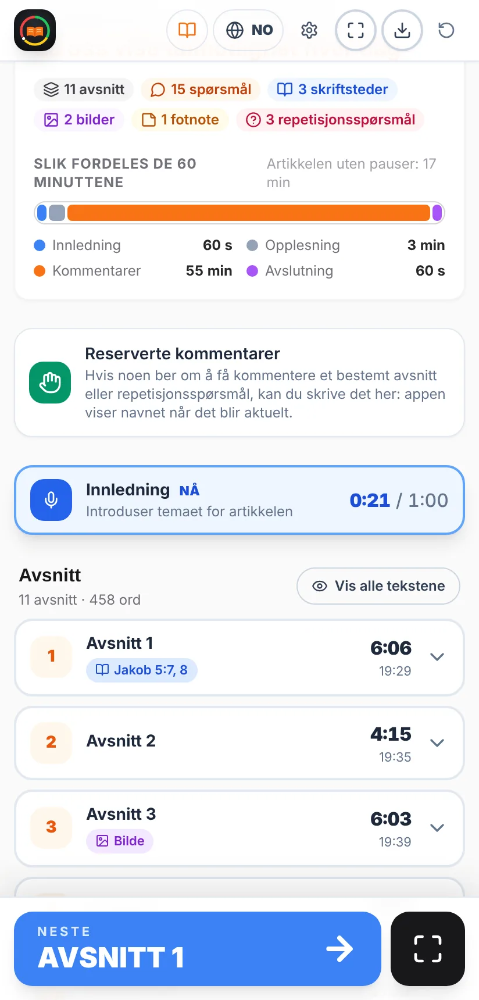
Innledningen pågår.
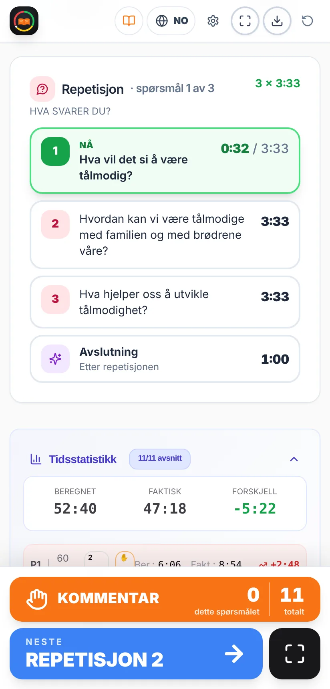
Repetisjonsspørsmål.
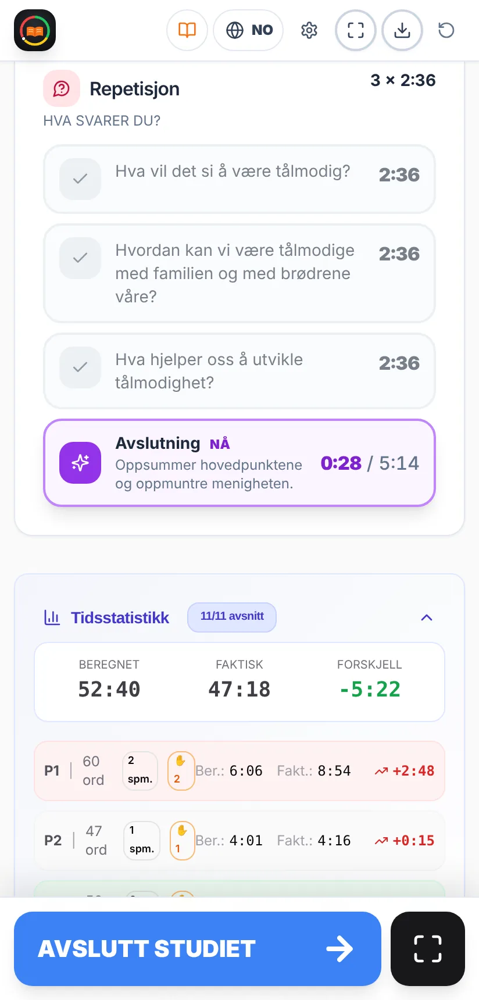
Avslutning.
Med knappen ⏸ i planen kan du sette stoppeklokken på pause hvis det blir et avbrudd. Under pausen stopper klokken for den delen som pågår, men sluttiden flytter seg ikke: Gjenværende tid fortsetter å gå ned, fordi møtet slutter i tide.
Studielinje
I klokkepanelet viser en tynn linje hele studiet på én linje: innledning, hvert avsnitt eller hver gruppe, repetisjon og avslutning. Hver del er like lang som den planlagte tiden sin.
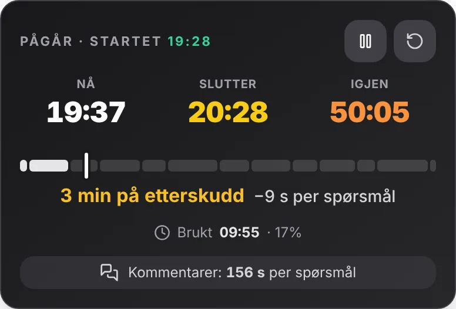
3 minutter på etterskudd i avsnitt 1.
Hvitt: det dere har gjort. Grått: det som er igjen.
Streken: hvor dere burde være ifølge klokken. Den flytter seg av seg selv.
Under: «I rute», «2 min på etterskudd» eller «1 min foran». Hvis dere er på etterskudd, ser du også hvor mye hver kommentar som gjenstår, vil miste hvis dere ikke tar det igjen (for eksempel «−9 s per spørsmål»).
Den sammenligner med planen som ble lagd da studiet begynte, så det vises med en gang hvis dere kommer på etterskudd i de første avsnittene, ikke først på slutten. Under 1 minutt står det «I rute», og teksten endrer seg bare én gang i minuttet, så den ikke distraherer. Du kan slå den av under Innstillinger → Skjerm → «Studielinje».
8Fargene: grønt, gult og rødt
Kortet for det som pågår (avsnitt, innledning, repetisjonsspørsmål eller avslutning), skifter farge etter hvor lang tid som er brukt:
Farge
Når
Hva du bør gjøre
I RUTE
Opp til den planlagte tiden.
Alt er bra: Fortsett.
EKSTRATID
Den har gått over tiden, men ikke med mer enn 30 %.
Begynn å runde av kommentarene.
OVER TIDEN
Mer enn 30 % over den planlagte tiden.
Gå videre til neste avsnitt.
I rute.
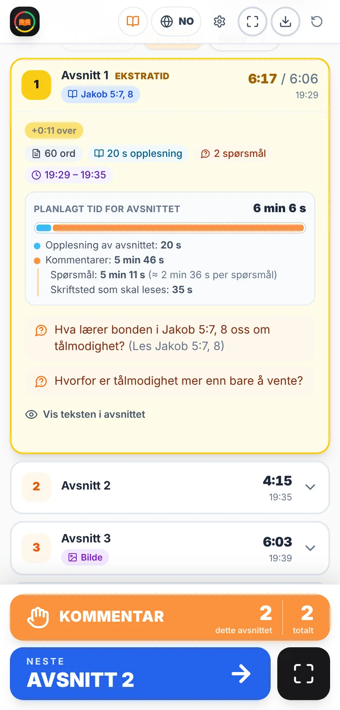
Ekstratid, med hvor mye den har gått over.Over tiden.
I de siste 5 minuttene av studiet har avsnitt og repetisjonsspørsmål ingen ekstratid: De går rett fra grønt til rødt, så de ikke spiser av tiden på slutten. Avslutningen beholder alltid ekstratiden sin.
Hvis en del tar lang tid, trenger du ikke å bekymre deg: Når du trykker på Neste, fordeler appen den tiden som er igjen, på det som gjenstår, slik at du blir ferdig i tide.
«Neste»-knappen varsler deg også
Når delen som pågår, blir rød, endrer også den store knappen for å gå videre seg, så du legger merke til det uten å lete:
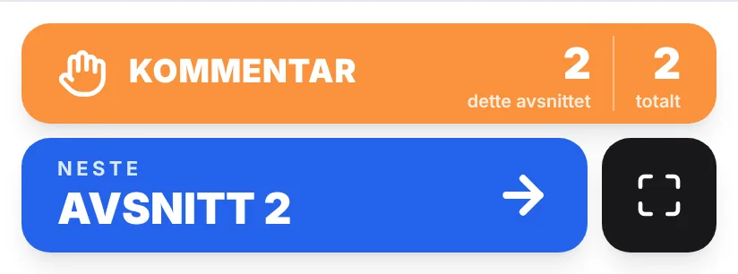
Rød: tiden kan fortsatt tas igjen.
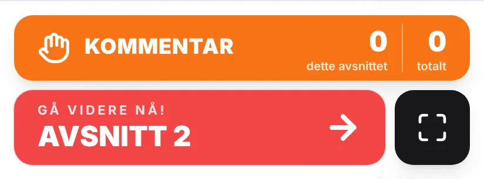
Blinker: Gå videre nå.
Rød knapp: Delen har gått over tiden, men tiden kan fortsatt tas igjen i det som gjenstår. Begynn å runde av kommentarene.
Rød knapp som blinker, med «Gå videre nå!»: Det er ikke mer tid å ta igjen (det ville blitt mindre enn 30 sekunder til hvert spørsmål som gjenstår, eller dere er i de siste 5 minuttene). Gå videre så snart du kan.
I presentasjonsmodus blir knappen hvit med røde bokstaver, så den skiller seg ut på enhver bakgrunnsfarge.
Hvis du ikke vil ha den, slår du den av under Innstillinger → Varsler → «Rød «Neste»-knapp».
9Presentasjonsmodus
Dette er den anbefalte måten å lede studiet på. Den viser bare det du trenger, med stor tekst og store knapper, og fargen forteller deg med ett blikk hvordan det går med tiden.
Åpne den med knappen ⛶ nederst, og lukk den med ✕ øverst (eller med telefonens «tilbake»-knapp, uten å gå ut av appen).
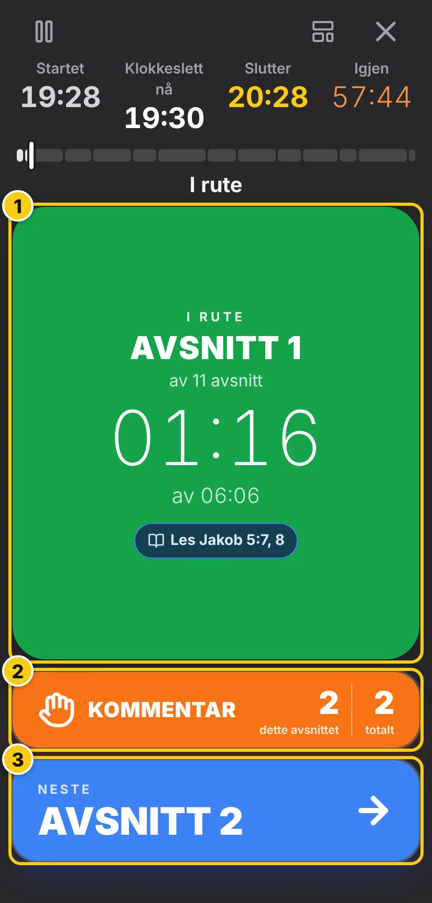
Presentasjonsmodus under et avsnitt.
Farget boks: hvor dere er (for eksempel Avsnitt 1), stoppeklokken for den delen og den planlagte tiden. Grønn, gul eller rød etter hvordan det går.
Kommentar: Trykk på den hver gang noen kommenterer. Til venstre ser du kommentarene i dette avsnittet (eller dette spørsmålet) og til høyre totalt.
Neste: går videre til neste del. Knappen viser hva som kommer.
Reservert kommentar: Hvis du har reservert en kommentar til delen som pågår, vises navnet med store bokstaver i den fargede boksen. Hvis den er til neste del, ser du den under som «Neste: …», så du ikke glemmer den.
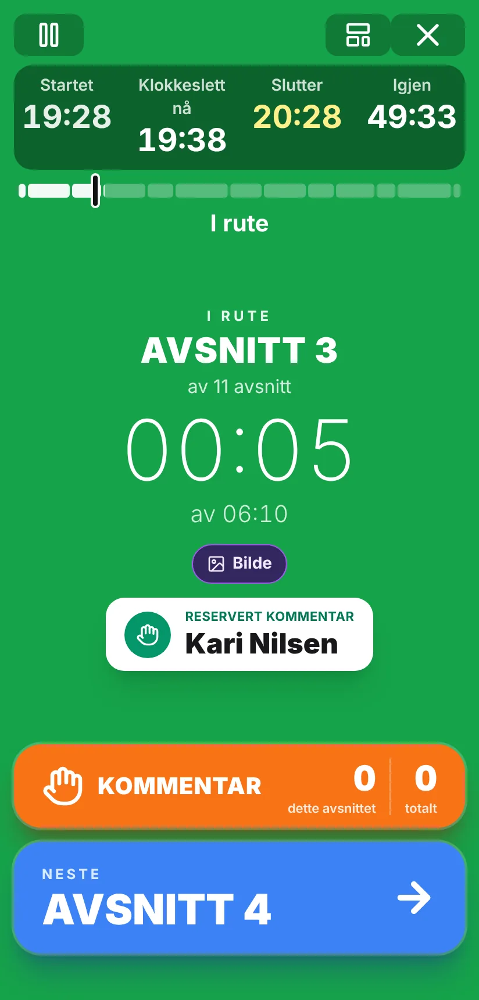
Reservert kommentar i avsnitt 3.
Studielinje: Den samme linjen fra punkt 7 vises under tidene, i alle de tre utseendene.
Øverst ser du når studiet startet, klokkeslettet nå, når det slutter, og tiden som er igjen.
Det finnes tre utseender. Bytt med knappen ▦ øverst eller under Innstillinger → Skjerm:
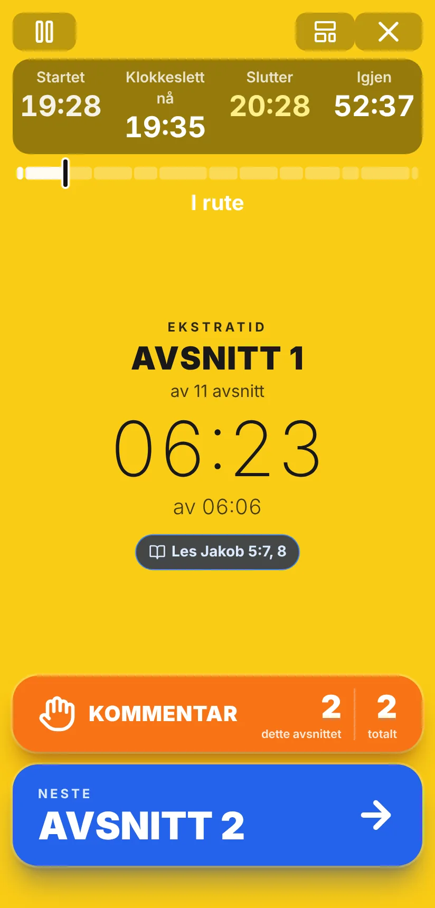
Trafikklys: Hele skjermen skifter farge.
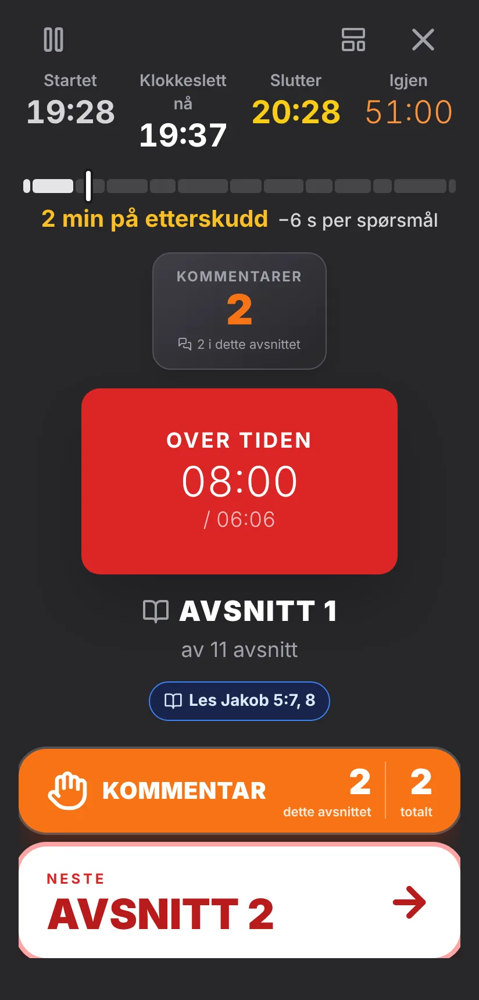
Klassisk: med kommentartelleren.
Til slutt står det «Avslutt studiet» på den store knappen og deretter «Se rapporten».
10Slik beregnes tidene
Opplesning av hvert avsnitt = ordene ÷ lesehastigheten (150, 180 eller 210 ord i minuttet). Hvert skriftsted, bilde, fotnote eller hovedpunkt legger i tillegg til tiden per svar (minst 30 sekunder; 35 som standard) som en kommentar, fordi tilhørerne leser det eller kommenterer det.
Innledningen og avslutningen har tiden som er satt i Innstillinger (1 minutt hver som standard). Avslutningen tilpasser seg sluttiden: Hvis det er tid igjen etter repetisjonen, får den alt; hvis det er mindre, blir den kortere.
Kommentarer: Resten av tiden fordeles på alle spørsmålene. Avsnitt med flere ord får litt mer (det grønne «ekstra» i punkt 6).
Flere ord, mer tid til kommentarer: Et langt avsnitt gir som regel flere kommentarer, i tillegg til svaret på spørsmålet og skriftstedene eller bildene. Derfor sammenligner appen ordene i hvert avsnitt med gjennomsnittet i artikkelen: De som har flere ord, får ekstra kommentarrunder (opp til 2), og de korte får bare tiden til spørsmålene sine. Grupperte avsnitt («Avsnitt 4, 5») får ikke mer tid bare fordi de er gruppert: Ordene i alle sammen telles mot spørsmålene deres. Dette skjer automatisk: Det er ingenting å stille inn.
Under studiet: Hver gang du trykker på Neste, beregnes det som er igjen, på nytt, slik at du blir ferdig i tide.
Eksempel: I et studium på 60 minutter med 11 avsnitt og 21 spørsmål går omtrent 7 minutter til opplesning, 2 til innledning og avslutning og omtrent 51 til kommentarer: litt over 2 minutter per spørsmål.
11Innstillinger
Trykk på ⚙ øverst til høyre. Innstillingene lagres på enheten din og er ordnet i fire faner:
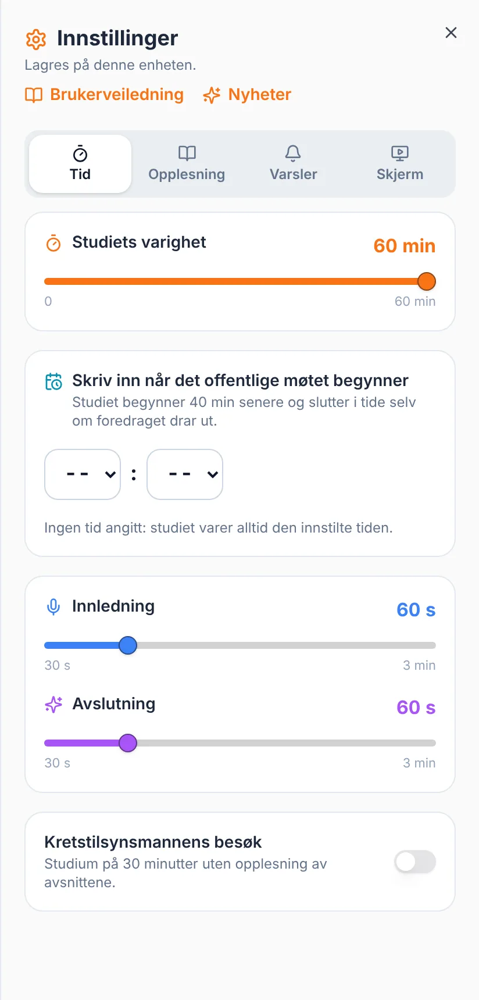
Tid
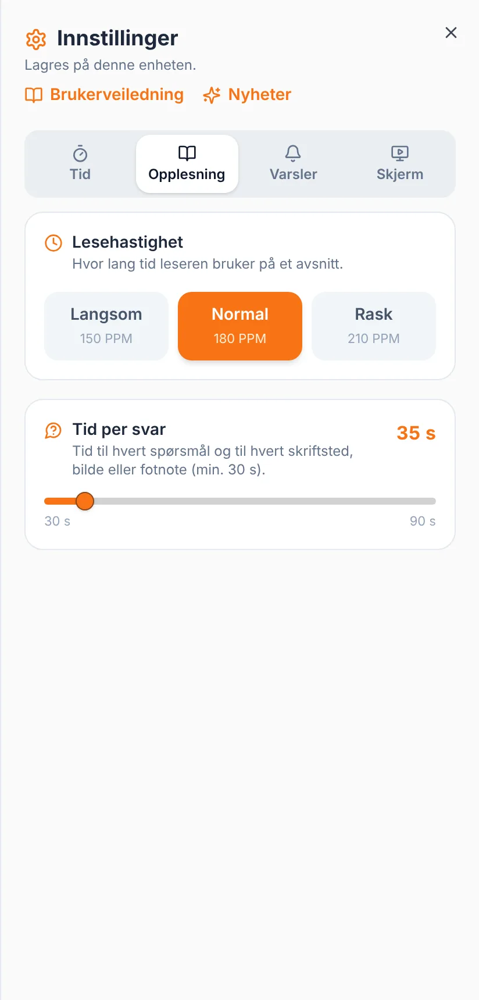
Opplesning
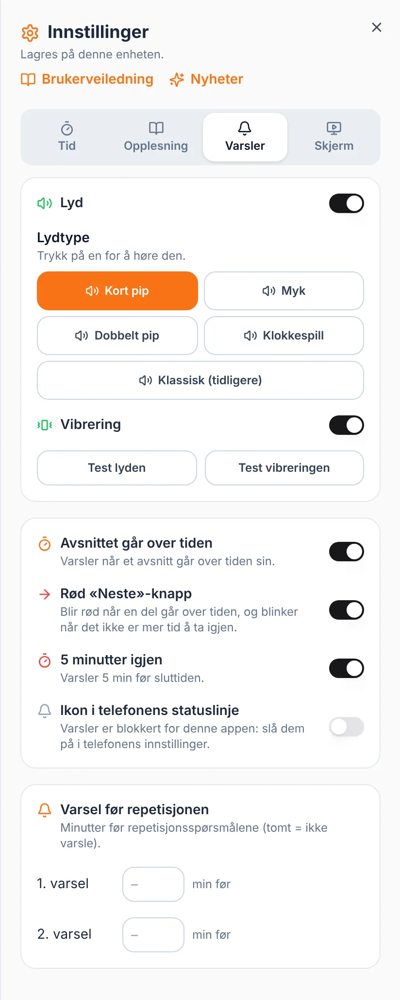
Varsler
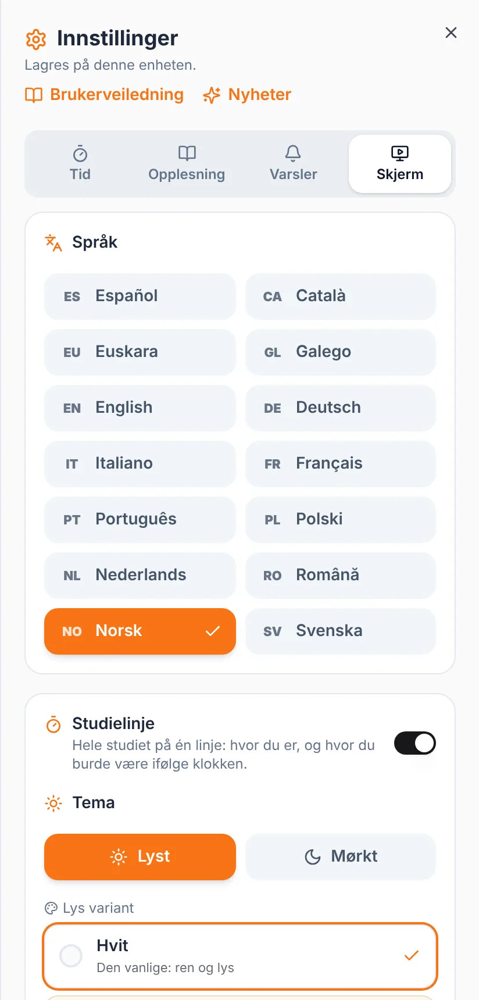
Skjerm
Fane
Hva du kan endre
Tid
Studiets varighet (opp til 60 min). Varigheten av innledningen og avslutningen (30 s til 3 min). Kretstilsynsmannens besøk. Når det offentlige møtet begynner.
Opplesning
Leserens lesehastighet: Langsom (150), Normal (180) eller Rask (210 ord/min). Tid per svar (30 til 90 s; brukes også for hvert skriftsted, bilde, fotnote eller hovedpunkt).
Varsler
Lyd og vibrering (med knapper for å teste dem). Varselet Avsnittet går over tiden, varselet «5 minutter igjen» og opptil to varsler før repetisjonen. Lydtype og ikon i statuslinjen (punkt 12).
Skjerm
Språk, lyst eller mørkt tema (med seks mørke varianter: grafitt, AMOLED-svart, nattblå, varm, skoggrønn og aubergine; og seks lyse: hvit, krem, himmelblå, mintgrønn, lavendel og perlegrå) og utseendet i presentasjonsmodus. Studielinje (på eller av).
Hvis du endrer lesehastigheten eller tiden per svar mens studiet pågår, gjelder det fra neste studium.
12Lyd- og vibreringsvarsler
Lydtype: Velg kort pip (standard, diskret så det ikke distraherer), myk, dobbelt pip, klokkespill eller den tidligere klassiske lyden. Trykk på hver av dem for å høre den.
Ikon i telefonens statuslinje: Hvis du slår det på og går over til en annen app under studiet, ser du et lite ikon øverst på telefonen med sluttiden. Trykk på det for å gå tilbake til timeren. Det er lydløst og forsvinner når du kommer tilbake. Første gang spør telefonen om tillatelse til å vise varsler.
Avsnittet går over tiden: lyder når avsnittet som pågår, går over tiden sin.
5 minutter igjen: 5 minutter før sluttiden, med lyd, vibrering og en melding på skjermen.
Før repetisjonen: Skriv inn hvor mange minutter før repetisjonsspørsmålene du vil ha et varsel (for eksempel 10 og 5). La det stå tomt hvis du ikke vil ha det.
Lite tid til repetisjonen: Hvis det er mindre enn 20 sekunder igjen per repetisjonsspørsmål, varsler appen deg.
Rød «Neste»-knapp: Knappen for å gå videre blir rød når en del går over tiden, og blinker når det ikke er mer tid å ta igjen (punkt 8).
Pass på at telefonen ikke står på lydløs hvis du vil høre varslene. Vibrering fungerer på Android; på iPhone avhenger det av nettleseren.
13Kretstilsynsmannens besøk
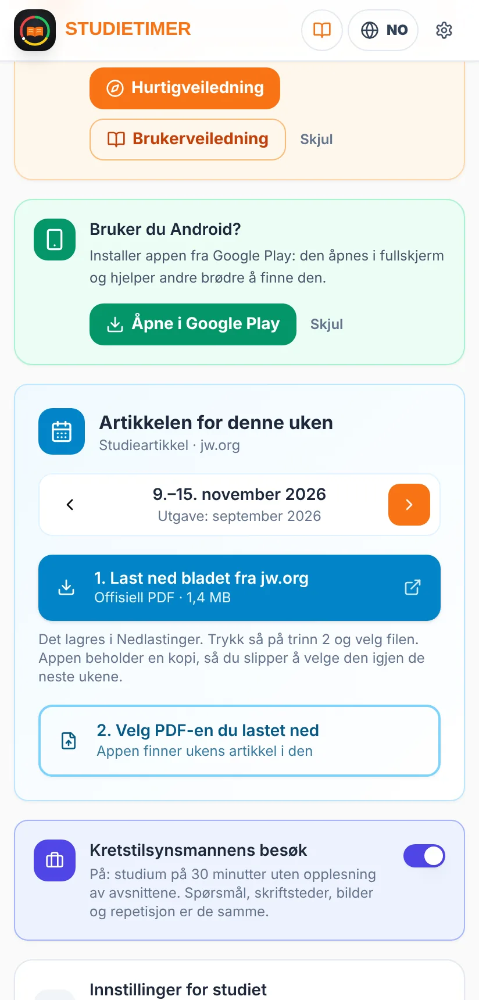
Bryteren slått på: studium på 30 minutter.
I besøksuken slår du på bryteren «Kretstilsynsmannens besøk» på startskjermen (eller under Innstillinger → Tid). Da varer studiet i 30 minutter, og avsnittene leses ikke: Spørsmålene, skriftstedene, bildene og repetisjonen er de samme. Husk å slå den av etter besøket.
Den uken leses ikke avsnittene. I planlagt tid for hvert avsnitt vises skriftsteder som skal leses, bilder og fotnoter under kommentarene, for eksempel «Skriftsted som skal leses» eller «Bilde som skal kommenteres» (i flertall hvis det er flere).
14Språk
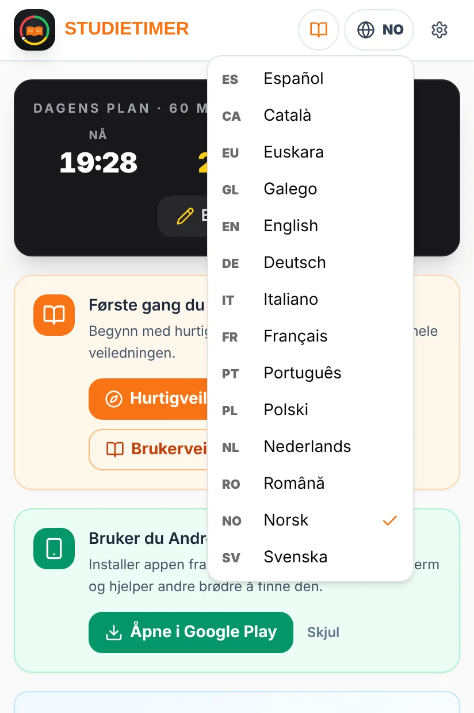
Språkmenyen.
Appen fungerer på spansk, katalansk, baskisk, galisisk, engelsk, tysk, italiensk, fransk, portugisisk, polsk, nederlandsk, rumensk, norsk og svensk. Bytt språk med jordklode-knappen øverst eller under Innstillinger → Skjerm. Når du bytter språk,
vises hele appen på det språket, med datoer og klokkeslett.
laster jw.org-knappen ned Vakttårnet på det samme språket. Språket i appen bestemmer språket i bladet.
spør appen én gang på portugisisk om du foretrekker utgaven for Portugal eller Brasil. Du kan endre det senere under Innstillinger → Skjerm.
Denne veiledningen finnes også på alle disse språkene: Bruk språkknappene øverst.
15Når du er ferdig: rapporten og historikken
Når du trykker på «Avslutt studiet», lagrer appen en rapport med tidene for hver del. Den hjelper deg å se hva som tok lang tid, så du kan gjøre det bedre neste gang.
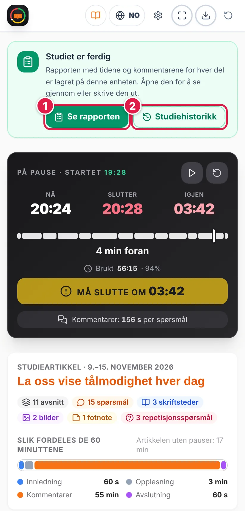
Kortet «Studiet er ferdig» vises øverst.
Se rapporten: åpner rapporten for dette studiet i en egen fane.
Studiehistorikk: åpner listen over alle lagrede studier.
Rapporten
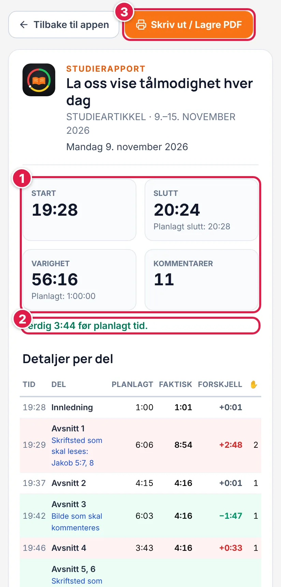
Toppen av rapporten.
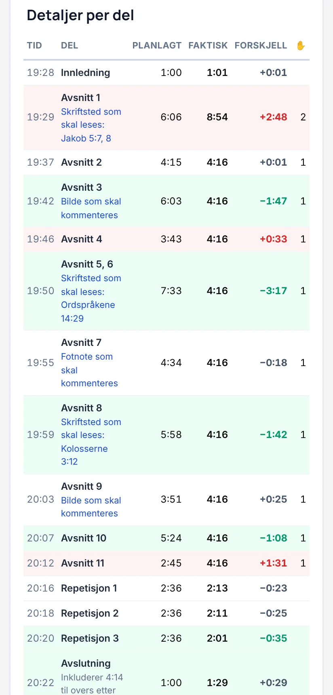
Tabellen med hver del.
Start, slutt og varighet for studiet, med planlagt sluttid og totalt antall kommentarer.
Oppsummering i én setning, for eksempel «Ferdig 3:44 før planlagt tid.» (i grønt) eller «etter» (i rødt).
Skriv ut / Lagre PDF: for å skrive den ut på papir eller lagre den som fil.
Tabellen har én rad for hver del: innledning, hvert avsnitt, hvert repetisjonsspørsmål og avslutning. På hver rad ser du
klokkeslettet da den delen begynte.
Planlagt og Faktisk: planlagt tid og tiden som faktisk ble brukt.
Forskjell: i grønt hvis det gikk raskere, og i rødt hvis det tok lengre tid.
✋: kommentarene du registrerte.
Under hvert avsnitt, i blått: skriftsteder som skal leses (med henvisningen), bilder og fotnoter som skal kommenteres.
På datamaskin og på utskrift vises også ordene og spørsmålene i hvert avsnitt. Den utskrevne rapporten får plass på én side.
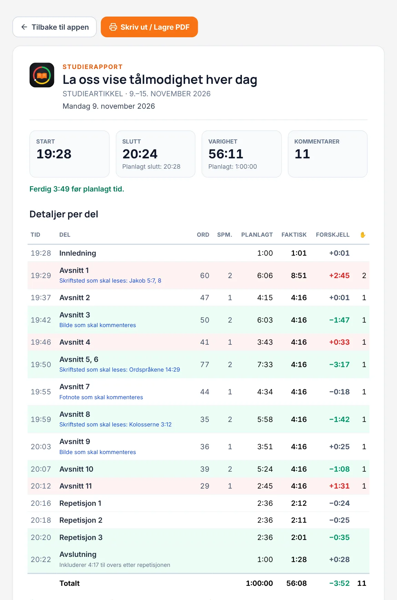
Hele rapporten, slik den ser ut på datamaskin eller på utskrift.
Studiehistorikken
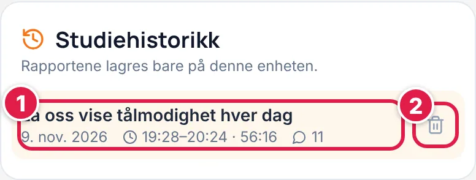
Listen over lagrede studier, under rapporten.
Trykk på et studium for å se rapporten. Den viser datoen, klokkeslettene, varigheten og kommentarene.
Søppelbøtte: for å slette en rapport. Trykk én gang, og bekreft så med «Slette?».
Rapportene lagres bare på denne enheten, aldri på Internett. Opptil 100 studier blir tatt vare på. Hvis du sletter dataene i nettleseren eller appen, går historikken tapt.
Du kan også åpne historikken fra kortet «Studiehistorikk» på startskjermen.
Andre muligheter
Under planen finner du også tidsstatistikken for hvert avsnitt.
Med eksport-knappen ⬇ øverst kan du lagre studieplanen som bilde eller PDF.
For å forberede et nytt studium trykker du på start på nytt↻.
16Ofte stilte spørsmål
Kan jeg lede ved å lese avsnittene og spørsmålene i appen?
Nei. Appen viser dem bare for å beregne tidene. Når du leder, bruker du alltid JW Library eller det trykte Vakttårnet.
Hvorfor ble Vakttårnet lastet ned på et annet språk?
Bladet lastes ned på det språket appen er på. Bytt språk med jordklode-knappen og trykk på «Last ned bladet fra jw.org» igjen.
Det står at formatet på artikkelen ikke ble gjenkjent.
Bruk den offisielle PDF-en av Vakttårnet, studieutgaven, lastet ned fra jw.org (knappen «Last ned bladet fra jw.org» gjør det for deg). Skannede PDF-er eller PDF-er lagd av skjermbilder kan ikke leses.
Den finner ikke ukens artikkel i bladet.
Sjekk at den valgte uken hører til den utgaven av bladet. Hvis ikke, viser appen den nærmeste artikkelen og lar deg velge en annen uke.
Trenger jeg Internett under studiet?
Bare for å laste ned bladet. Når artikkelen er lastet inn, fungerer timeren uten nett.
Jeg kom sent eller begynte sent. Hva gjør jeg?
Åpne avsnittet dere er på, og trykk på «Start herfra». Appen fordeler tiden som er igjen.
Det offentlige foredraget dro ut.
Før du begynner, trykker du på «Endre sluttid» og skriver inn når studiet må slutte for at møtet skal slutte i tide. Appen gjør alt kortere for å bli ferdig til den tiden. Denne muligheten gjør bare studiet kortere: aldri lengre. Hvis du har angitt når det offentlige møtet begynner, i Innstillinger, trenger du ikke det: Appen gjør det for deg.
Varslene lyder ikke.
Sjekk under Innstillinger → Varsler at de er slått på, trykk på «Test lyden», og pass på at telefonen ikke står på lydløs.
Hvilke data lagrer appen?
Bare innstillingene dine og bladene du velger å beholde, og alltid på enheten din. Det finnes ingen kontoer, og ingen data sendes til noen server. Mer informasjon i personvernerklæringen.
Hvor kan jeg se studiene fra andre uker?
I studiehistorikken: Trykk på «Studiehistorikk» når du avslutter et studium, eller bruk det grønne kortet på startskjermen.
Kan jeg slette en rapport?
Ja. I historikken trykker du på søppelbøtten ved siden av studiet og bekrefter så med «Slette?».
Hvorfor varte avslutningen lenger enn planlagt?
Hvis det er tid igjen etter repetisjonen, får avslutningen den tiden, slik at du blir ferdig i tide. Rapporten viser det under «Avslutning».
Hvordan finner jeg ut hva som er nytt?
Når det kommer en ny versjon, vises en melding med «Oppdater». Appen laster aldri inn på nytt av seg selv: Hvis du leder, trykker du på den når du er ferdig. Da ser du et vindu med det som er endret. Du kan se det igjen under Innstillinger → Nyheter.
Jeg glemte å trykke på «Neste», og vi er allerede på et annet avsnitt.
Åpne avsnittet dere er på, og trykk på «Start herfra». Appen hopper til det avsnittet uten å nullstille klokken: Den beholder sluttiden og fordeler tiden som er igjen, på avsnittene som gjenstår.